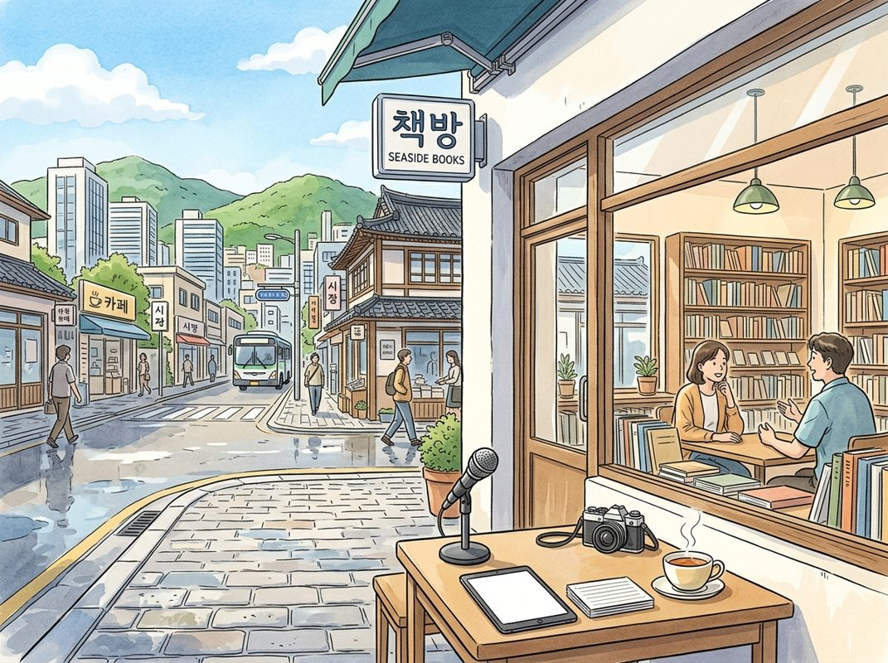

10/4

播客简报 2026-10-04
今日更新
How Mark Zuckerberg, Palmer Luckey, Josh Kushner & Scott Wu Think | Jeremy Stern
来源：David-Senra
原链接：https://www.davidsenra.com/episode/jeremy-stern
状态：已读网页 transcript
这期播客深入探讨了Jeremy Stern作为Colossus主编，如何以文学笔法剖析马克·扎克伯格、帕尔默·拉奇、斯科特·吴和乔什·库什纳等顶尖创业者与投资人的深层心理、历史情结及独特驱动力，适合对人物深度分析、商业领袖心路历程及长篇报道写作方法感兴趣的中文读者。
- Jeremy Stern的独特视角与写作哲学：Jeremy Stern作为Colossus的主编，以其卓越的长篇人物特写闻名。他并非传统意义上的商业或科技记者，而是将小说和诗歌的创作技巧融入商业报道。他的写作方法独特：首先关注一个“事物”或一个引人深思的问题，然后寻找最能体现或探索这个“事物”的人物。他认为，当今时代，科技和商业领域的领袖已成为美国乃至全球文化的核心人物，因此他选择深入剖析他们。Stern的目标是揭示这些人物的真实面貌、他们的心理世界，以及他们所处的宏大文化和历史格局如何影响其人生，而非仅仅停留在商业细节或产品介绍。他致力于创作经得起时间考验、具有文学深度的作品，而非转瞬即逝的快餐式报道。
- 马克·扎克伯格：数字帝国的“奥古斯都”：Jeremy Stern对马克·扎克伯格的深度剖析，揭示了这位Meta创始人鲜为人知的一面。尽管扎克伯格常被视为“过度曝光”的人物，但Stern认为其内心世界和构建公司的方式仍有大量未被探索的领域。扎克伯格是其同代创始人中“硕果仅存”者，与盖茨、乔布斯、贝佐斯等人的退出或离世形成鲜明对比。他长期痴迷于罗马帝国及其首位皇帝奥古斯都，甚至能背诵拉丁诗歌。扎克伯格将奥古斯都从掠夺经济转向贸易经济的成就视为榜样，这反映了他对自身“建造者”角色的理解，尽管他选择性地忽略了奥古斯都建立常备军和废除政治自由的另一面。这种历史投射，为理解扎克伯格的领导风格和抱负提供了独特视角。
- 扎克伯格的AI战略与“建造者”本色：扎克伯格的竞争驱动力被形容为“无情且永不满足”，一位前AI研究员称他为“终结者”，总是对现状不满，但并非对人刻薄。他将自己的优势归结为“不性感”的长期主义：与团队坐下来，几十年如一日地改进单一产品，不断为其注入价值。与一些将公司视为“人类历史终结”的AI领袖不同，扎克伯格更将Meta视为一家企业，其目标是持续构建。在AI领域，尽管外界曾质疑Meta的落后，但扎克伯格凭借其庞大的用户基础（覆盖全球半数人口）、强大的基础设施和数据中心网络，以及对用户注意力的主导，拥有独特的竞争优势。他二十年来在“无聊”的基础设施建设上的投入，使其在AI竞赛中占据了有利的“互补品”地位，让许多专家不愿轻易押注他会输掉这场竞赛。
- 帕尔默·拉奇：在争议中彰显的独立品格：帕尔默·拉奇（Oculus和Anduril创始人）是Jeremy Stern撰写的第一篇人物特写。Stern最初的兴趣源于对国防科技有效性的疑问，特别是在2023年10月7日以色列冲突和乌克兰战争背景下。拉奇作为国防科技领域的关键人物，成为探索这一主题的理想对象。这篇特写最终演变为一篇关于拉奇生平的深度报道。其中最引人注目的是拉奇在2016年大选期间支持特朗普的决定。在当时硅谷普遍反对特朗普的氛围中，这一举动导致他被Facebook解雇，失去了自己一手创立的公司。Stern认为，拉奇在面临巨大个人代价时，仍坚持自己的信念，这深刻展现了他的独立品格、正直和对自己判断的坚定信心，而非随波逐流。
- 斯科特·吴：AI时代的真诚天才与全能竞争者：在AI领域领袖普遍面临公众负面评价的背景下，Jeremy Stern寻找一位既是技术天才又具人文关怀的AI人物，斯科特·吴（Cognition AI创始人）应运而生。Stern赞赏吴的真实性，他没有经过媒体包装，直接展现自我。Stern甚至选择以更接近对话的形式呈现这篇特写，让读者仿佛置身现场。吴被公认为数学和编程奥林匹克竞赛中的“史上最佳”，即使在众多天才中也脱颖而出，并展现出与年龄不符的天然领导力。他的竞争精神是全方位的，如同迈克尔·乔丹一样，渴望在任何事情上都取得胜利，而非仅限于商业领域。吴对出售公司毫无兴趣，坚信要将自己的事业进行到底，这体现了他作为“建造者”的纯粹与坚定。
历史精选
Andreessen Horowitz Part I
来源：Acquired
状态：已读部分音频 transcript
本期播客深入剖析了Andreessen Horowitz两位创始人——Ben Horowitz和Marc Andreessen——在创立这家颠覆性风投公司之前，其各自截然不同却又殊途同归的早期人生轨迹和职业经历。对于任何对科技创业、风险投资历史以及互联网早期发展感兴趣的中文读者来说，这期节目提供了理解a16z世界观和其投资哲学根源的宝贵视角。
- Ben Horowitz的激荡童年与伯克利印记：Ben Horowitz于1966年出生于伦敦，其父亲David Horowitz是一位著名的激进政治活动家，活跃于美国新左翼运动。Ben的童年深受其父政治立场的影响，全家在1968年搬回美国加州伯克利，一个当时反文化运动的中心。年幼的Ben每周日都会随家人参加与黑豹党领导人Huey Newton关系密切的“人子教会”活动，亲身经历了美国历史上最具影响力的黑人民权运动。1974年，年仅8岁的Ben遭遇了黑豹党簿记员Betty Van Patter失踪并被发现浮尸湾区的悬案，这起至今未破的事件被普遍认为是黑豹党所为。这些动荡而复杂的童年经历，无疑在Ben的心中留下了深刻烙印，塑造了他对权力、生存和“艰难之事”的独特理解，也促使他渴望摆脱父亲的影响，开辟自己的人生道路。
- 从政治漩涡到硅谷曙光：Ben的计算机之路：为了摆脱政治阴影，Ben Horowitz将目光投向了当时蓬勃发展的计算机革命。他先后在哥伦比亚大学获得计算机科学本科学位，并在加州大学洛杉矶分校（UCLA）获得计算机科学硕士学位。他的职业生涯始于传奇的硅图公司（SGI）实习，SGI在90年代初是图形计算领域的巨头，为《侏罗纪公园》等电影制作特效，甚至为任天堂N64游戏机制造处理器。在SGI短暂工作一年后，Ben尝试加入一家SGI分拆的初创公司，但以失败告终。随后他加入了Lotus公司。正是在Lotus工作期间，Ben听说了伊利诺伊大学NCSA实验室正在开发的Mosaic浏览器，他敏锐地意识到这代表着互联网的未来，并被其巨大的潜力所吸引，为他日后投身互联网浪潮埋下了伏笔。
- Mark Andreessen的平凡出身与非凡洞察：与Ben Horowitz截然不同，Marc Andreessen出生于爱荷华州，成长于威斯康星州一个人口稀少的小镇。他的家庭背景朴实无华，父亲是种子销售经理，母亲从事客户服务。Andreessen从小就渴望离开中西部小镇，投身于计算机和互联网领域。他选择伊利诺伊大学攻读计算机科学，不仅因为学费负担得起，更重要的是该校的国家超级计算应用中心（NCSA）提供了参与前沿项目的机会。在NCSA实习期间，Andreessen接触到了全球超级计算项目，并听说了欧洲核子研究组织（CERN）的Tim Berners-Lee正在开发的万维网（World Wide Web）。尽管当时许多硅谷人士认为PC时代已近尾声，互联网潜力有限，但Andreessen却以“反常”的远见，坚信互联网将成为主流消费媒体，连接数十亿用户。
- Mosaic的诞生与互联网的“去精英化”：在NCSA，Andreessen与Eric Bina合作，开发了Mosaic浏览器。当时，早期互联网社区普遍认为互联网应该保持“难用”，只供少数技术精英使用，以维持其“纯粹性”。然而，Andreessen坚信互联网应该开放且易于使用，甚至图形化，以便普通用户也能轻松访问。他顶着可能被解雇的风险，推动了Mosaic的开发。Mosaic的出现，颠覆了当时封闭的互联网生态，它将原本只有少数人能接触到的复杂技术，通过直观的图形界面开放给所有人。这种“开放一切”的模式，使得Mosaic在1993年发布后，用户数量呈爆炸式增长，在短短9个月内从寥寥无几达到百万级别，成为互联网的“杀手级应用”，打破了AOL和CompuServe等“围墙花园”的垄檬。
- 从Mosaic到Netscape：商业化与早期融资：Mosaic的巨大潜力吸引了SGI创始人Jim Clark的注意。Clark在离开SGI后寻求新的创业项目，他主动联系了Andreessen，提议将Mosaic商业化。最初，Clark计划与任天堂合作，将N64游戏机连接到互联网，提供在线服务。然而，N64项目的意外延期一年，使得他们无法按原计划与任天堂达成协议。这一历史性的延迟，促使Clark和Andreessen将精力转向构建一个独立的浏览器公司，即最初的“Mosaic Communications Corporation”，后因NSA的诉讼威胁更名为“Netscape Communications”（网景通信）。公司成立后，Jim Clark投入400万美元，并最终从Kleiner Perkins和John Doerr那里获得了500万美元的早期投资，换取了网景25%的股份，为公司的快速发展奠定了资金基础。
Coupang: Korean E-Commerce Craze - [Business Breakdowns, EP.169]
来源：Business Breakdowns
原链接：https://joincolossus.com/episodes/8745983/cohen-coupang-korean-e-commerce-craze
状态：已读网页 transcript
这期播客深入剖析了韩国电商巨头Coupang的崛起之路，揭示了其如何从团购网站成功转型为“韩国亚马逊”，并凭借极致的物流创新和会员体系建立起强大的竞争壁垒。对于关注电商平台发展、市场颠覆者以及如何在特定市场环境下打造护城河的投资者和创业者来说，本期内容提供了丰富的案例研究和深刻洞察。
- 创始人愿景与战略转型：从团购到“韩国亚马逊”：Coupang的创始人Bom Kim最初的愿景是打造一个能深刻影响人们日常生活的公司。公司创立初期，Coupang曾以类似Groupon的团购模式运营，但在意识到这种模式的局限性后，Bom Kim做出了一个大胆而关键的战略转型：全面转向亚马逊式的自营电商模式。这一转型并非易事，需要巨大的资本投入和对物流基础设施的重构，但正是这一决定，为Coupang后续的爆发式增长奠定了基础，使其能够掌控从商品采购到最后一公里配送的整个价值链，从而提供无与伦比的客户体验。
- 极致物流创新：火箭配送构筑核心壁垒：Coupang成功的核心在于其对物流体系的颠覆性投入和创新。公司斥巨资自建了覆盖全国的端到端物流网络，包括仓储、分拣中心和自有配送团队。其标志性的“火箭配送”（Rocket Delivery）服务，承诺在午夜前下单的商品次日送达，甚至提供当日达和黎明达服务。这种极致的配送速度和可靠性，在韩国这个人口密集、技术普及率高的市场中，迅速赢得了消费者的青睐。通过对物流的深度掌控，Coupang不仅提升了效率，降低了成本，更重要的是，为竞争对手设置了极高的进入壁垒。
- 韩国市场特性与Coupang的竞争优势：韩国独特的市场环境为Coupang的崛起提供了沃土。作为一个高度城市化、人口密度大、互联网和移动支付普及率极高的国家，韩国消费者对便捷和速度有着极高的要求。Coupang精准抓住了这些需求，通过其高效的物流网络和卓越的服务体验，迅速占据了市场主导地位。尽管面临Naver、Shinsegae和Lotte等本土巨头的竞争，Coupang凭借其在物流、技术和用户体验上的持续投入，成功构建了强大的护城河，使其在激烈的电商竞争中脱颖而出。
- 会员体系“Rocket Wow”：锁定高价值用户：Coupang的“Rocket Wow”会员计划是其用户增长和留存的关键驱动力，其模式与亚马逊Prime会员高度相似。通过支付月费，会员可以享受无限次免费火箭配送、免费退货、Coupang Eats（外卖）折扣、Coupang Play（流媒体）等一系列增值服务。这一会员体系不仅显著提升了用户的购买频率和客单价，还通过捆绑多种服务，极大地增强了用户粘性，使得会员成为Coupang最忠诚、消费能力最强的用户群体。会员计划的成功，是Coupang实现规模经济和提升盈利能力的重要策略。
- 运营杠杆与盈利模式演进：随着Coupang物流基础设施的不断完善和用户规模的持续扩大，其运营杠杆效应日益显现。早期，公司为了建立物流网络投入巨大，导致长期亏损。但随着订单量的增长，单位订单的物流成本逐渐摊薄，毛利率和整体盈利能力得到显著改善。除了自营商品的销售，Coupang也积极发展第三方卖家平台，通过收取佣金和广告费来多元化收入来源。这种从重资产投入到轻资产平台模式的结合，使得Coupang在保持服务质量的同时，逐步走向盈利。